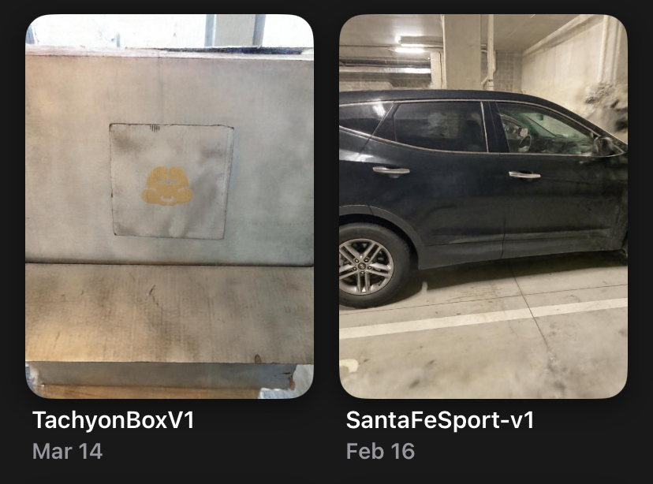
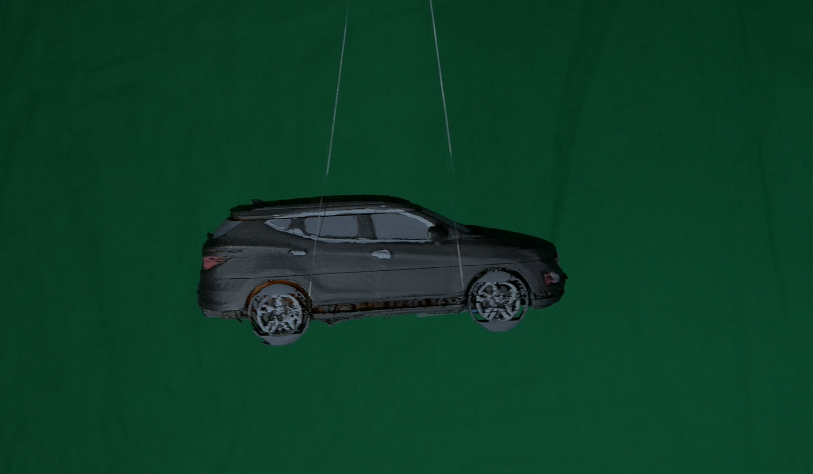
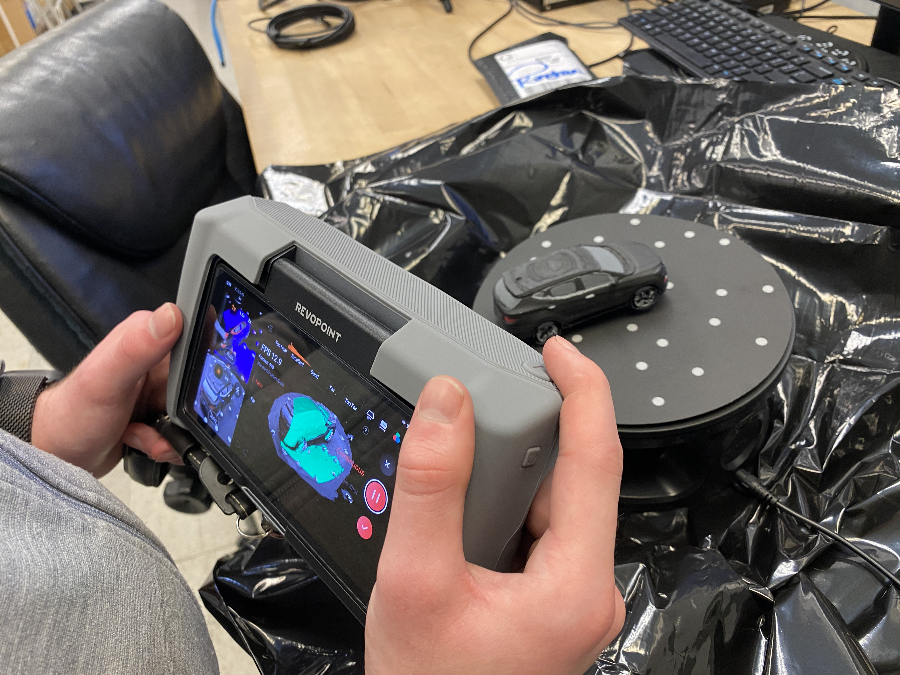
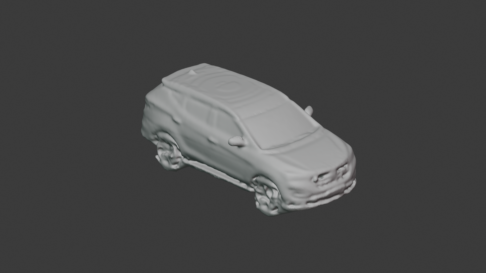
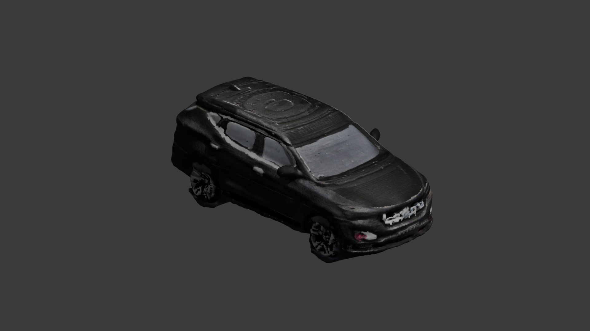
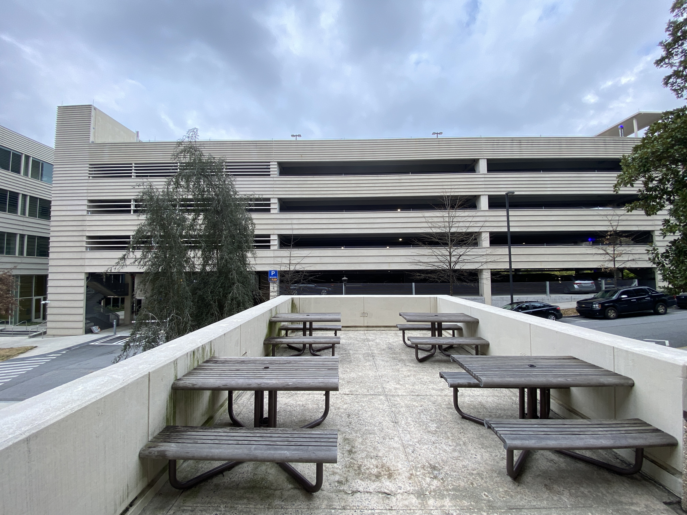
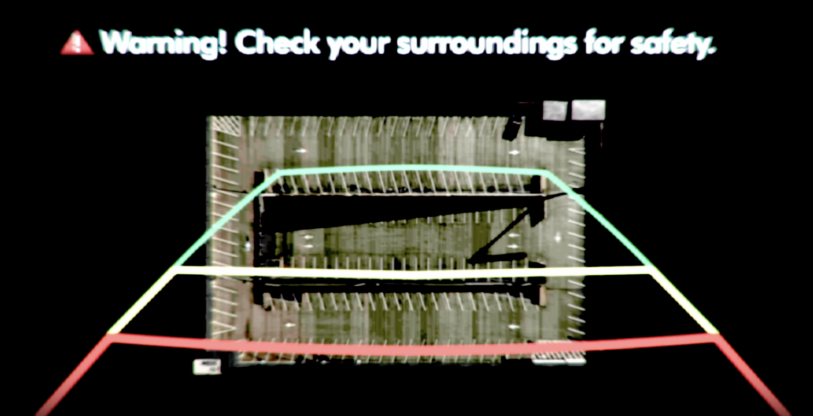

For Tachyon Deliverance, I wanted a to use highly specific models for a joke 90% of people would not get: a miniature version of my actual car, Carnie, and a model of the actual parking deck we shot the Alien Thing scene at. Instead of modeling everything from scratch, I made a hybrid workflow using photogrammetry, procedural Blender setups, 3D printing, hand painting, and some AI upscaling to give digitial models a tactile feel.
I started by 3D scanning my real car using photogrammetry via LumaAI. This gave me a dense but very messy mesh with lots of noise, holes, and weird topology, but also accurate proportions and real-world character that physical models would have.
I brought the scan into Blender and did a cleanup pass:
Once the mesh was solid, I exported it and 3D printed the car. This step intentionally introduces even more jank: layer lines, soft edges, and minor warping all help sell the miniature look later on.
After printing, I hand painted the car with acrylics.
I attempted to film the actual miniature against a green screen background by tying it to a fishing string. It was incredibly difficult to control, and without a custom motion rig I wasn't able to get the exact movements I wanted by hand. I eventually opted to just do the whole thing digitally.
I 3D scanned the painted miniature using a $10000 handheld 3D scanner provided by my friend who works at Georgia Tech's Invention Studio (who also plays Zlep in the cantina scene!). Any Lidar-based 3D scanning app with would also be a good cheap alternative. This captured all the physical imperfections of the miniature that I wanted to make the digital model feel handmade.
The scanned miniature went through one last Blender cleanup pass, resulting in the final digital version of Carnie. It’s a copy of a copy of a copy and in a way exactly what I wanted. I also used photogrammetry for the delivery box.
 For the top surface of the parking deck, I started with a Google Maps screenshot of the actual deck we shot at. I ran it through Invoke AI to upscale the image and manually removed Google Maps watermarks.

The cleaned-up image was then projected directly onto the top of the deck model, giving me real-world layout information without manually painting a texture.
To ground the structure, I 3D scanned a concrete block and a parking-side barrier. These scans became reusable detail pieces that could be tiled and repeated without looking obviously procedural.
The parking deck itself was built using array modifiers in Blender. Each layer (floor, barrier, gaps) was designed once and stacked procedurally.
This made it easy to:
This pipeline is pretty creatively flexible and each step adds another layer of texture. Scans introduce chaos, procedural systems keep things controllable, and AI fills in gaps where speed matters more than purity.
It’s a cycle between the physical and digital worlds, and the artifacts from this are what make the final assets feel more real.